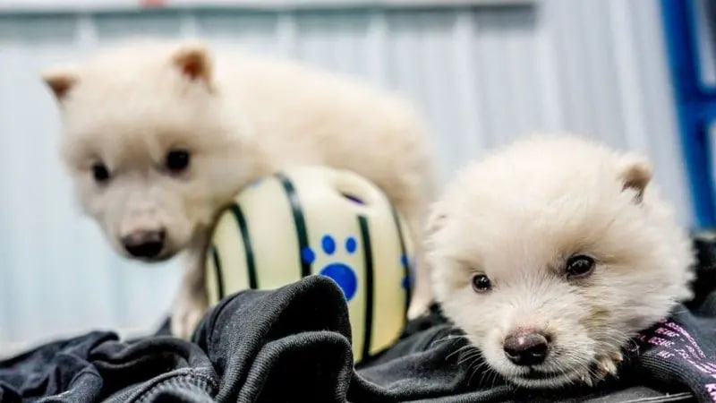

O'zbekiston
Jahon
Iqtisod
Sport
Nuqtayinazar
Jamiyat
Fantexnika
Audio
O'zbekiston
Jahon
Iqtisod
Sport
Nuqtayinazar
Jamiyat
Fantexnika
Audio
Colossal Biosciences kompaniyasi qirilib ketgan hayvon turini tiriltirish bilan bog‘liq birinchi muvaffaqiyatli tajribani e’lon qildi: olimlar vahshiy bo‘ri bolalarini ko‘rsatdi. Ushbu tur Shimoliy Amerika hududida yashagan va 10 ming yil oldin qirilib ketgan. Ammo ba’zi mutaxassislar kompaniya muvaffaqiyatini tan olishni istamayapti va bu aslida yo‘qolib ketgan turning qayta tiklanishi emas, balki gibrid ekanini ta’kidlamoqda. BBC voqealar rivojini jamladi.
Qo‘riqxonadagi vahshiy bo‘rilar
Vahshiy bo‘ri (Aenocyon dirus) Jorj Martinning «Muz va olov qo‘shig‘i» kitoblari va ular asosida suratga olingan «Taxtlar o‘yini» seriali tufayli madaniyatda ommalashdi.
Colossal Biosciences o‘zining so‘nggi yutug‘ini shov-shuv bilan e’lon qildi: Rem ismli vahshiy bo‘ri TIME jurnali muqovasida paydo bo‘ldi.
Kompaniya kulrang bo‘rining (Canis lupus) DNK tizimiga o‘zgarish kiritdi. Keyin katta itlardan surrogat sifatida foydalangan holda, «kesarcha kesish» yo‘li orqali uchta bo‘ri bolasini dunyoga keltirdi.
Romul va Rem 2024 yil 1 oktyabrda tug‘ildi va afsonaga ko‘ra, ona bo‘ri tomonidan emizilgan hamda Rim shahriga asos solgan aka-uka sharafiga nomlandi. Urg‘ochi bo‘ri Kxalisi 2025 yil 30 yanvarda tug‘ildi va «Muz va olov qo‘shig‘i» hamda «Taxtlar o‘yini» qahramoni nomi bilan ataldi.
Kulrang bo‘ri bolalari bilan solishtirganda, Rem, Romul va Kxalisi yelkasi keng, bosh suyagi va jag‘i kattaroq, oyoqlaridagi mushaklar ko‘proq. Ammo eng sezilarli farq ularning oppoq mo‘ynasidir.
Hozir jonivorlar Colossal Biosciences kompaniyasiga tegishli 800 gektarlik ekologik qo‘riqxonada yashaydi. Kompaniya genetik modifikatsiyalar kutilmagan ta’sir ko‘rsatdimi yoki yo‘qligini bilish uchun ularni butun hayoti davomida diqqat bilan kuzatib borishni rejalashtirmoqda.
